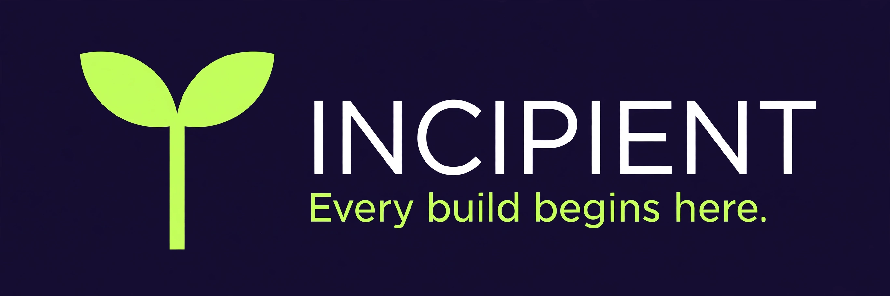

Safety-first approvals
Keep consequential actions deliberate. Approval checkpoints keep you in charge of what happens next.
CONTROL BUILT INA considered approach to coding agents
INCIPIENT
A safety-first, general-purpose coding agent that puts you in control—from the first prompt to the final diff.

01 / THE TOOLKIT
A focused foundation for real work.
Easy to understand. Ready to extend.
Keep consequential actions deliberate. Approval checkpoints keep you in charge of what happens next.
CONTROL BUILT INBuilt in TypeScript with a lean runtime footprint. Less to install, less to untangle, more room to build.
LEAN BY DEFAULTBring INCIPIENT into your existing workflow through an MCP server that communicates over stdio.
CONNECT YOUR WORKFLOWChoose the endpoint that fits your work. Keep your coding workflow independent of a single provider.
YOUR MODEL, YOUR CHOICEA straightforward text protocol for tool interactions. Keep the conversation between agent and tools readable.
READABLE BY DESIGNFollow the work with a record of agent activity. Look back at actions and understand how you got here.
A CLEAR TRAIL02 / FROM INTENT TO ACTION
Stay in your terminal.
Move from an idea to the work.
Configure your OpenAI-compatible endpoint and credentials for the provider you choose.
Tell INCIPIENT what you want to build, fix, or explore. Start with a clear goal.
Follow the agent’s work, review requested actions, and keep moving with intention.
$ incipient run "Explain this codebase and suggest a first improvement"03 / MAKE A START
Your terminal is a good place to begin. Install the CLI, configure your endpoint, and give your first task a little momentum.
See how it works$ npm install -g incipient$ incipient --help$ incipient run "Explain this project"Configure your endpoint and credentials before running a task.
CAPABILITY, WITH CARE
A useful agent should make its work easy to follow. INCIPIENT pairs safety-first approvals with an audit log, so you can make informed decisions and review the path from prompt to action.
A SMALL START. AN OPEN HORIZON.